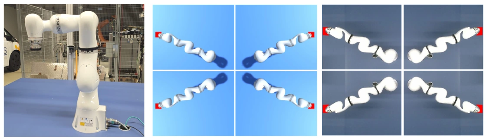
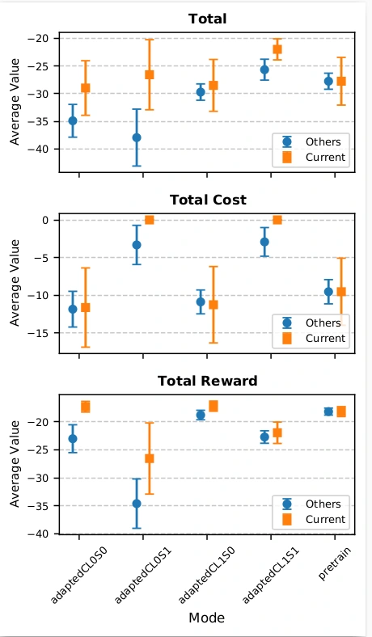
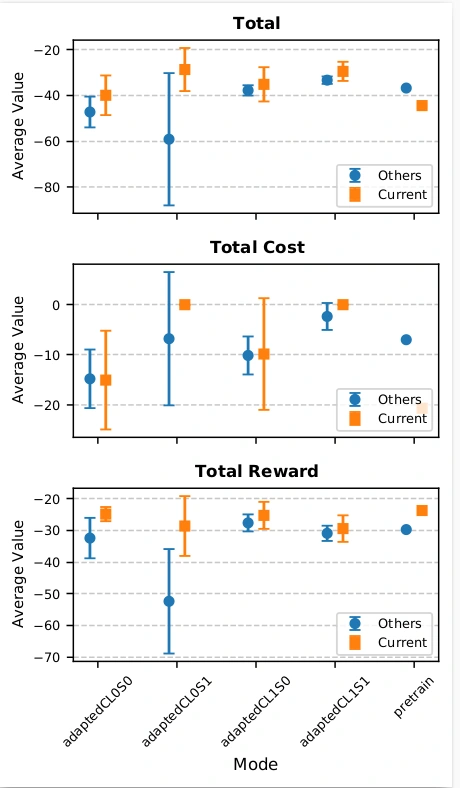
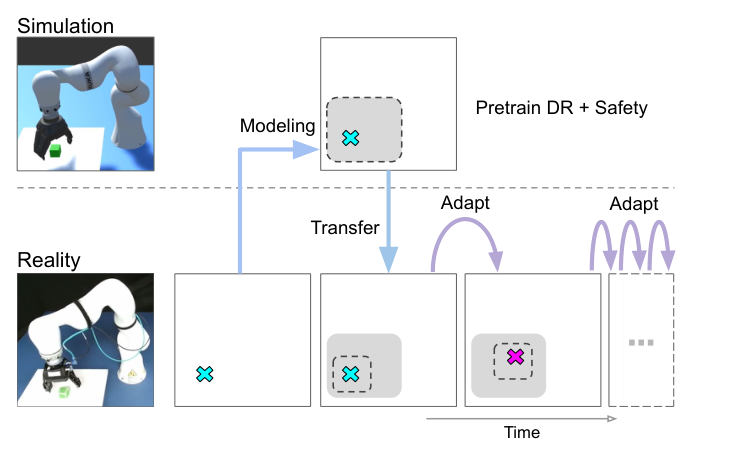

Method at a glance
How it works
- 01Pretrain in simulationLearn with broad dynamics randomization and safety-aware policy updates.
- 02Calibrate and adaptAlign simulated timing and joint dynamics with the KUKA system before adaptation under stricter safety settings.
- 03Transfer and test retentionContinue on the robot and evaluate both the current target and previously learned targets.
Project workflow schematic.
Why adapt after transfer?
A policy trained across many simulated system variations can transfer robustly yet remain inefficient on the particular physical robot it encounters. Leaving it fixed also limits its ability to respond when dynamics or task conditions change. SCDA investigates deployment-time policy adaptation while controlling the risks of exploration and catastrophic forgetting.
The coauthored study evaluates a KUKA LBR iiwa 14 manipulator on reach-and-balance and grasping tasks. Safety is represented explicitly through joint-limit and collision-related costs rather than being folded entirely into a single task reward.
My guided-research implementation
My October 2025 final presentation documents a three-stage implementation: broad domain-randomized pretraining, adaptation in a calibrated realistic simulation, and continued adaptation on the KUKA robot. I worked on aligning the digital twin with the physical system, including control timing and joint stiffness and damping, so that the transition between training and hardware used comparable dynamics and safety settings.
The reach-and-balance task uses four end-effector targets above the table. Reaching accuracy supplies the reward, while proximity to hazardous regions contributes a separate safety cost. The protocol tightens the safety settings after pretraining and uses a safety shield during hardware adaptation.


Safe optimization and continual learning
The learning system contains a stochastic actor and separate reward and cost critics. In the reported implementation, each network is a multilayer perceptron with two hidden layers of 64 units. The actor predicts a Gaussian action distribution; the two critics estimate performance and safety-related returns.
Pretraining uses PCRPO to balance reward and safety optimization in randomized simulation. Afterward, policy rollouts estimate a diagonal Fisher information matrix. During adaptation, an Elastic Weight Consolidation-style penalty discourages changes to actor parameters that were important to the pretrained policy. The reward and cost critics continue adapting to the current system.
Tasks, observations, and training data
Training data consists of interaction rollouts from the VTPRL simulator and physical robot rather than a fixed image dataset. Domain randomization varies joint dynamics and observation noise. The real robot is controlled through the IIWA stack and ROS.
The reaching task uses a five-dimensional state containing Cartesian target error and two joint positions, with two joint-velocity actions. The grasping task uses an eleven-dimensional state with pose error and seven joint positions, and four end-effector velocity actions. A Robotiq three-finger gripper is used in the grasping experiment.
Robot runtime and simulation calibration
My final report documents separate Docker environments for training and robot execution. The simulation side combines Unity, DART physics and PyTorch through a Gym-like interface. The robot side hosts ROS nodes for action streaming, runtime checks and data logging through the iiwa control stack.
To calibrate the realistic-simulation stage, I recorded the physical robot’s position, velocity and acceleration during back-and-forth joint motions. These measurements informed joint damping, torque saturation, control timing and latency settings. Matching the response and timing made the staging environment more representative of the hardware adaptation loop.
The compact reaching benchmark uses a 100 ms control period and 10-second episodes. Commands pass through rate limits, velocity/torque saturation, workspace and joint-bound checks, with emergency-stop handling. The learned task controls two joint velocities on the KUKA platform; higher-dimensional contact-rich and vision-based manipulation remain follow-up directions.
Separating safety from memory
The experiment independently switches safety-constrained updates and EWC regularization on or off. This tests whether an apparent gain comes from safety optimization, retention of earlier behavior, or their combination. Realistic-simulation runs use five seeds. The hardware protocol selects a seed from that stage and keeps the adaptation schedule and safety settings fixed.
The report sets the adaptation safety-cost budget to one tenth of the pretraining budget. Four target-order sequences rotate which pose is trained last, so each target is evaluated once as Current and three times as Others under the same settings.
| Strategy | Safety updates | Continual-learning penalty |
|---|---|---|
| CL0S0 | Off | Off |
| CL0S1 | On | Off |
| CL1S0 | Off | On |
| CL1S1 / SCDA | On | On |
Adaptation, safety and retention
After each target-adaptation sequence, the protocol runs ten inference episodes per target. Evaluation separates the most recently trained target from the other three, revealing whether improvement on one task is accompanied by forgetting. Reward, safety cost and their combined score are reported separately.
The final presentation reports that the combined safety-and-continual-learning variant reached the cost budget before improving reward, and gave more stable combined performance across current and previous targets in these experiments. The figures below show the recorded comparisons. They describe the four-target setup rather than a guarantee for arbitrary contact-rich manipulation.
The report specifies how to read the uncertainty: realistic-simulation plots include variation across seeds and evaluation episodes, while the selected-seed physical-robot plots show episode variation. This keeps repeated hardware evaluation distinct from an independent multi-seed hardware study.




Project visuals



Related resources
Reviewed against my 17-page guided-research final report, especially pages 8–15, the final presentation, the related coauthored SCDA paper and the retained implementation. The compact reaching protocol, calibrated runtime and selected-seed hardware results are separate from the paper’s team grasping study.